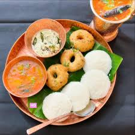
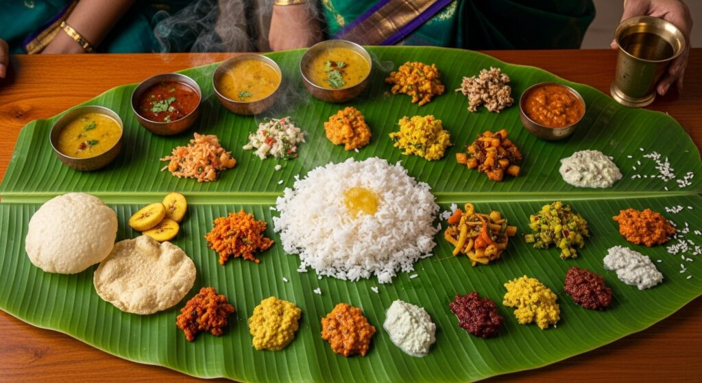
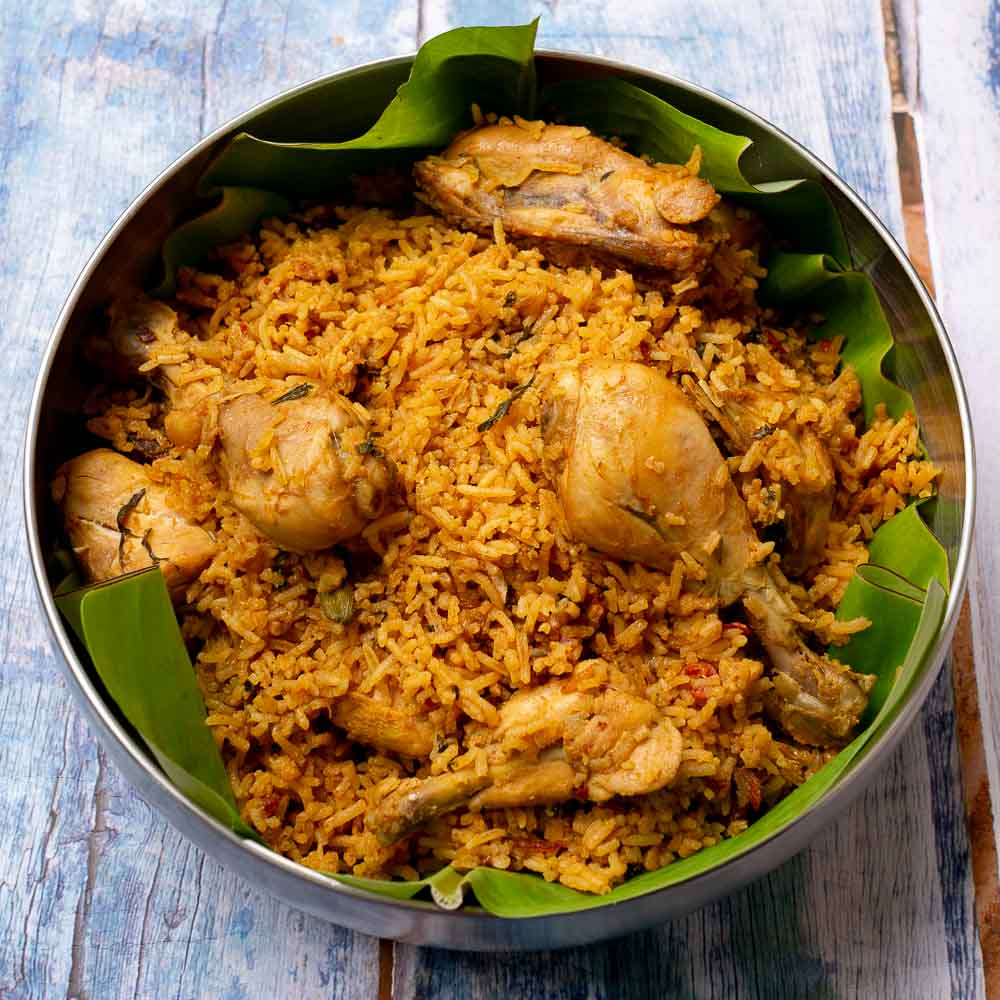
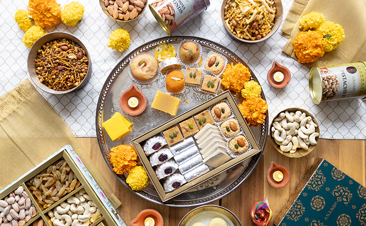

Menu page
Curated menus for weddings, office events, and family celebrations
This text-based menu replaces PDF dependency and improves mobile browsing, SEO, and quick quote planning.
Lunch
Veg and non-veg lunch service



Wedding Specials
Traditional marriage feast combinations

